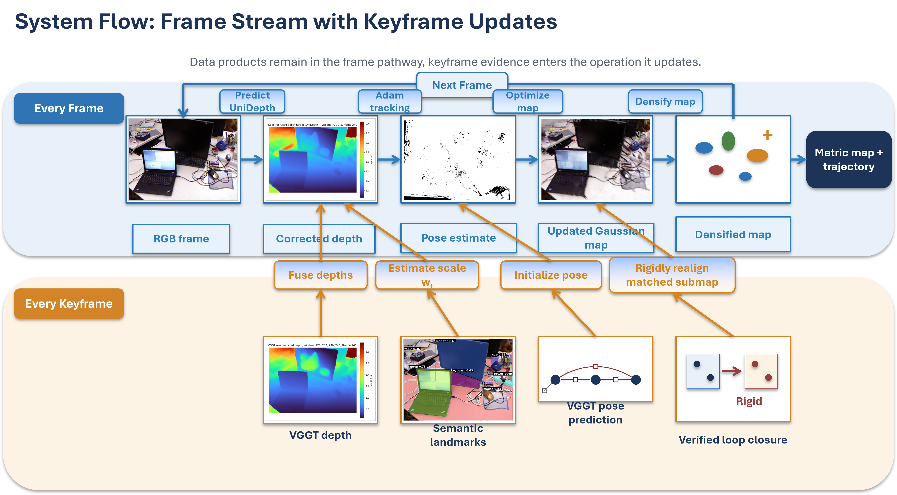
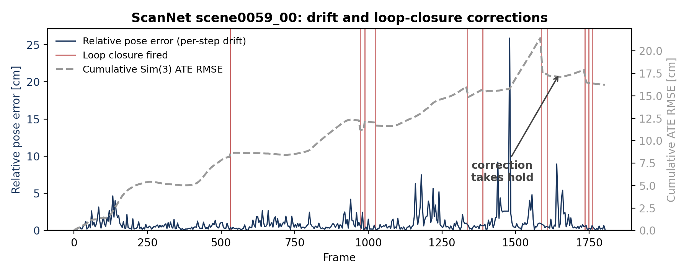

Metric-Level Monocular Semantic 3DGS SLAM
01/2026 – 09/2026 · Research
Contributors
Zelin Zhao, Yongxin Chen
Overview/Motivation
We developed a method that fused a metric, single-frame foundation model (UniDepthV2), with a multi-frame scale-free geometric foundation model (VGGT) to perform metric-level monocular semantic 3DGS SLAM. We decoupled the mapping and tracking to prevent uncorrected coupling-induced correction, and introduced a method of online reliability optimization through spatial depth frequency analysis. We also used semantic object landmarks (we used SAM2 for semantic masking) to provide another method to correct frame-dependent metric-depth scale error.

Algorithm Overview
Results/Contributions
- We obtained competitive results in certain scenes in both TUM RGB-D and ScanNet with respect to SE(3) error, as well as rendering characteristics (PSNR, LPIPS, SSIM).
- We presented a method of consistency analysis via spatial depth frequencies to fuse foundation models with complementary inference strengths.
Relevant Links
[paper]

Complementary Depth Fusion

Drift and Loop-Closure Corrections (ScanNet)